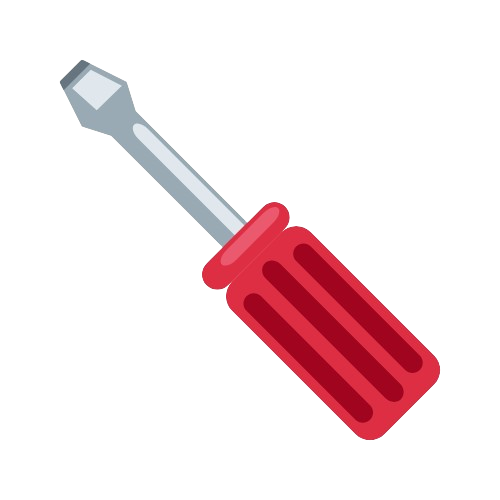

Many DIYers run on a low budget. This page is intended to give those who are tight on cash an idea about average costs for tools and explain their usage.
| Tool | Average Cost | Common Usage |
|---|---|---|
| Hammer | $20-$30 | Used for driving nails into wood, drywall, or any surface that is suitable for a nail. Use correct nails for the project. Hold the hammer firmly in your dominant hand and align your nail perpendicular (90 degrees) to the surface. Aim the hammer head towards the top of the nail and strike firmly until driven to the desired depth. |
| Nails | $5-$50+ |
There are many different types of nails used for different projects:
|
| Screws | $5-$50 | Screws are used for higher strength fastening of one material to another, wood, concrete, metal, drywall and more. Screws can be driven into materials with a screwdriver or a drill. |
| Tape Measure | $10-$30 | Tape measures are used to get acurate measurements. They are either metal or plastic with a yellow band with measurement marks in either inch/feet or centimeter/meter. The yellow band is flexible to be able to measure things in multiple environments and shapes. |
| Socket Wrench Set | $20-$50 | Socket wrenches come in metric and imperial standard. Some include sets with both measurement types. Imperial nuts require imperial sockets and metric nuts require metric sockets. Metric nuts are measured in mm space between groves, also known as pitch, and imperial are measured in threads per inch, TPI. |
| Duct Tape | $2-$7 | Duct tape is a high strength adhesive tape used to hold items together temporarily before finding a better fix. Duct tape has easy rip material, not requiring scissors to cut. |
| Spirit Level | $10-$20 | Spirit levels help to achieve horizontal and vertical lines on walls and create even surfaces. Spirit levels have a small transparent capsule with water and an air bubble. When the air bubble lies still in the middle, your surface is calibrated as a straight line. |
| Allen Wrench | $5-$20 | Allen wrenches are used to tighten bolts that have a hexagonal grove. Allen wrenches often come in a set with multiple sizes. Flat pack furniture usualy supply a complimentary Allen wrench. |